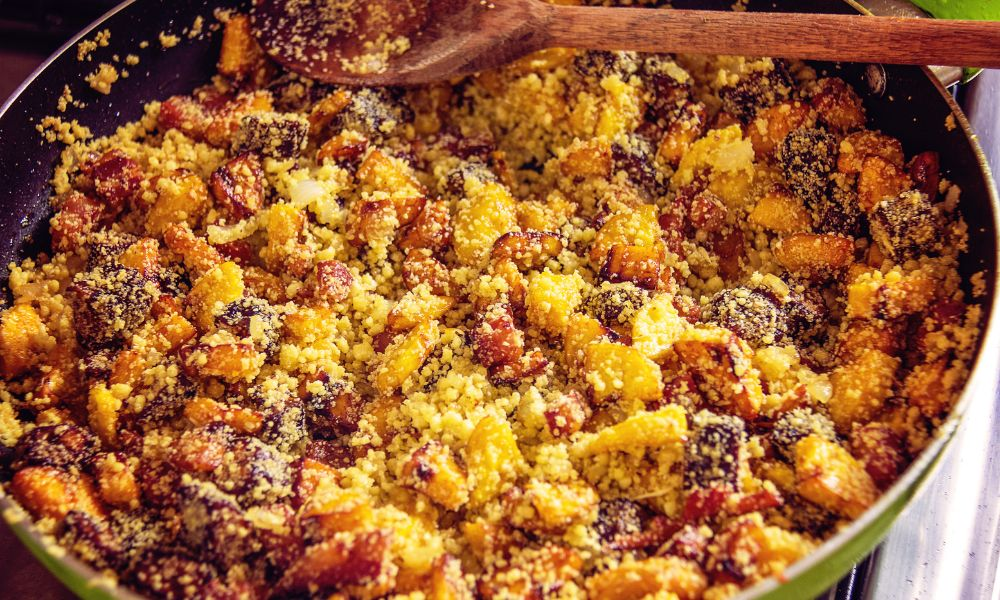

Nossas Receitas

Pintado na Telha
Ingredientes:
- 1 pintado médio (1,5 kg)
- 3 limões
- 4 dentes de alho
- Sal e pimenta-do-reino a gosto
- 2 colheres (sopa) de manteiga
- 1 cebola grande em rodelas
- 2 tomates em rodelas
- Cheiro-verde a gosto
Modo de Preparo:
- Limpe o peixe e tempere com limão, alho, sal e pimenta.
- Deixe marinar por 30 minutos.
- Aqueça a telha e adicione manteiga.
- Disponha o peixe e cubra com cebola, tomate e cheiro-verde.
- Asse por 20 minutos, virando na metade do tempo.
- Sirva na telha com arroz e farofa.
Arroz com Pequi
Ingredientes:
- 2 xícaras de arroz
- 1/2 kg de pequi
- 2 dentes de alho picados
- 1 cebola picada
- 2 colheres (sopa) de óleo ou banha
- Sal a gosto
- Cheiro-verde a gosto
Modo de Preparo:
- Refogue o alho e a cebola no óleo.
- Adicione o pequi e refogue por alguns minutos.
- Junte o arroz e misture bem.
- Adicione água suficiente e tempere com sal.
- Cozinhe até o arroz ficar macio.
- Finalize com cheiro-verde e sirva quente.

Farofa de Banana
Ingredientes:
- 4 bananas-da-terra maduras
- 2 colheres (sopa) de manteiga
- 1 cebola picada
- 2 xícaras de farinha de mandioca
- Sal e pimenta a gosto
- Cheiro-verde a gosto
Modo de Preparo:
- Corte as bananas em rodelas.
- Em uma frigideira, aqueça a manteiga e doure a cebola.
- Adicione as bananas e frite até dourar.
- Junte a farinha e mexa bem até incorporar.
- Tempere com sal, pimenta e cheiro-verde.
- Sirva quente como acompanhamento.